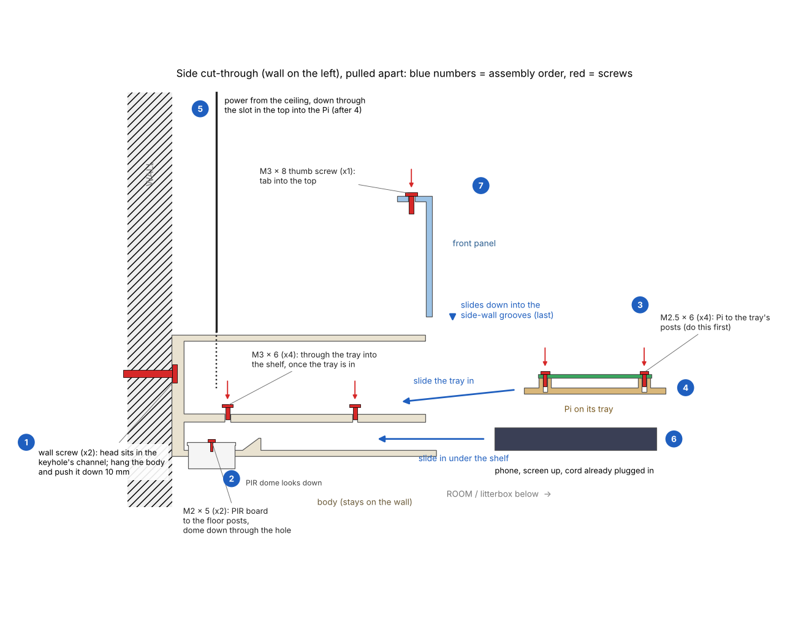
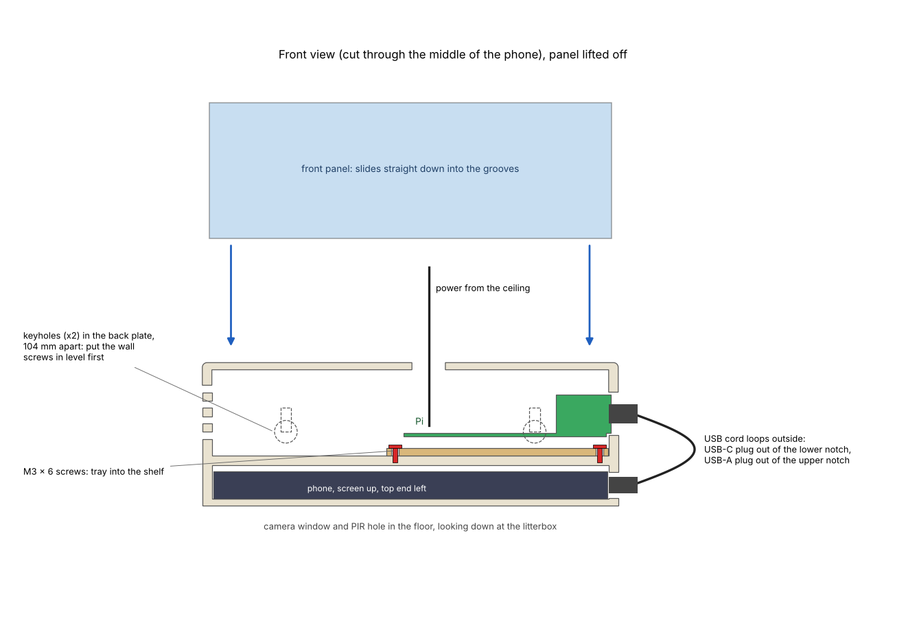
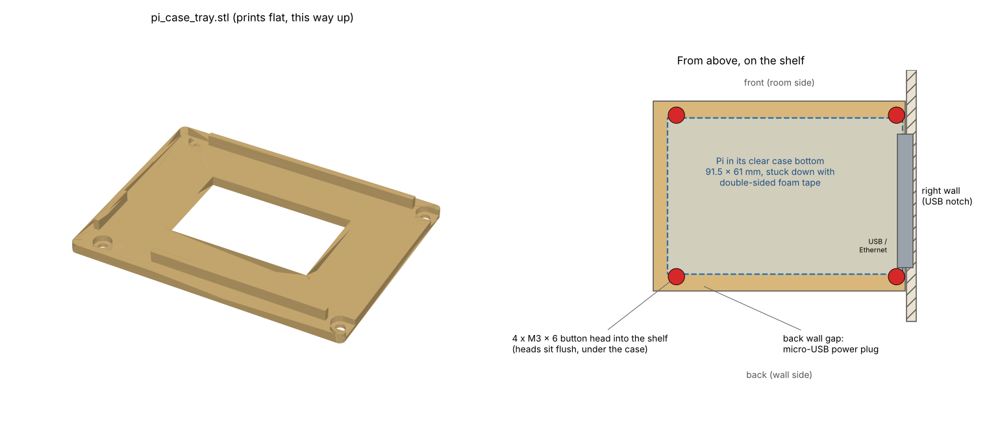

<title>Litterbox Rig Assembly</title>
<meta name="claude:viewport-fit-sides" content="cover">
<link rel="preconnect" href="https://fonts.googleapis.com">
<link rel="stylesheet" href="https://fonts.googleapis.com/css2?family=IBM+Plex+Sans:wght@400;500;600&family=IBM+Plex+Mono:wght@400;500&family=Space+Grotesk:wght@500;600&display=swap">
<style>
/* Layout: a single workshop-sheet column; diagrams sit on white "drawing plates", steps and hardware read like a build sheet. */
:root {
  --bg: #f6f7f5;
  --surface: #ffffff;
  --fg: #1d2421;
  --muted: #5d6a64;
  --line: #d7ddd9;
  --accent: #1f5fbf;      /* the blue of the step numbers in the drawings */
  --screw: #c62828;       /* the red of the screws in the drawings */
  --plate: #ffffff;       /* drawings are white in both themes */
  --chip: #e8eef8;
  --font-display: "Space Grotesk", "Helvetica Neue", Arial, sans-serif;
  --font-body: "IBM Plex Sans", "Helvetica Neue", Arial, sans-serif;
  --font-mono: "IBM Plex Mono", ui-monospace, Menlo, Consolas, monospace;
}
@media (prefers-color-scheme: dark) {
  :root:not([data-theme="light"]) {
    --bg: #141917; --surface: #1c2320; --fg: #e4eae7; --muted: #9aa8a1; --line: #2f3935;
    --accent: #7fb0ff; --screw: #ff7b7b; --plate: #ffffff; --chip: #233247; color-scheme: dark;
  }
}
:root[data-theme="dark"] {
  --bg: #141917; --surface: #1c2320; --fg: #e4eae7; --muted: #9aa8a1; --line: #2f3935;
  --accent: #7fb0ff; --screw: #ff7b7b; --plate: #ffffff; --chip: #233247; color-scheme: dark;
}
* { box-sizing: border-box; }
body {
  background: var(--bg); color: var(--fg); font-family: var(--font-body); font-size: 16px; line-height: 1.55;
  padding-left: max(16px, env(safe-area-inset-left, 0px));
  padding-right: max(16px, env(safe-area-inset-right, 0px));
  padding-block: 32px 64px;
}
main { max-width: 900px; margin: 0 auto; display: grid; gap: 40px; }
header { display: grid; gap: 8px; }
.eyebrow { font-family: var(--font-mono); font-size: 12px; letter-spacing: .08em; text-transform: uppercase; color: var(--muted); }
h1 { font-family: var(--font-display); font-weight: 600; font-size: clamp(28px, 5vw, 40px); line-height: 1.1; margin: 0; text-wrap: balance; }
h2 { font-family: var(--font-display); font-weight: 600; font-size: 22px; margin: 0 0 12px; text-wrap: balance; }
p { margin: 0; max-width: 65ch; }
.lede { color: var(--muted); }
.key { display: flex; flex-wrap: wrap; gap: 8px 20px; font-size: 14px; color: var(--muted); }
.key span { display: inline-flex; align-items: center; gap: 8px; }
.dot { width: 14px; height: 14px; border-radius: 50%; background: var(--accent); display: inline-block; }
.bar { width: 18px; height: 6px; background: var(--screw); display: inline-block; }
figure { margin: 0; display: grid; gap: 10px; }
.plate { background: var(--plate); border: 1px solid var(--line); border-radius: 6px; overflow-x: auto; }
.plate img { display: block; width: 100%; min-width: 640px; height: auto; }
figcaption { font-size: 14px; color: var(--muted); max-width: 65ch; }
ol.steps { list-style: none; margin: 0; padding: 0; display: grid; gap: 14px; counter-reset: s; }
ol.steps li { counter-increment: s; display: grid; grid-template-columns: 32px 1fr; gap: 12px; align-items: start; }
ol.steps li::before {
  content: counter(s); width: 28px; height: 28px; border-radius: 50%; background: var(--accent); color: var(--bg);
  font-family: var(--font-display); font-weight: 600; font-size: 14px; display: grid; place-items: center; margin-top: 1px;
}
ol.steps li > div { min-width: 0; }
ol.steps b { font-weight: 600; }
.screw { font-family: var(--font-mono); font-size: 14px; color: var(--screw); white-space: nowrap; }
.tablewrap { overflow-x: auto; border: 1px solid var(--line); border-radius: 6px; background: var(--surface); }
table { border-collapse: collapse; width: 100%; font-size: 15px; }
th, td { text-align: left; padding: 10px 14px; border-bottom: 1px solid var(--line); vertical-align: top; }
th { font-family: var(--font-mono); font-size: 12px; letter-spacing: .06em; text-transform: uppercase; color: var(--muted); font-weight: 500; }
tr:last-child td { border-bottom: 0; }
td.n { font-family: var(--font-mono); font-variant-numeric: tabular-nums; white-space: nowrap; }
.path { font-family: var(--font-mono); font-size: 14px; background: var(--chip); padding: 1px 6px; border-radius: 4px; }
.note { font-size: 14px; color: var(--muted); }
section { display: grid; gap: 12px; }
</style>

<main>
  <header>
    <div class="eyebrow">cat-id · enclosure · Pi 3 + Galaxy S20 FE + HC-SR501</div>
    <h1>Litterbox Rig Assembly</h1>
    <p class="lede">How the three printed parts (body, Pi tray, front panel) go together, and where every screw goes. The enclosure hangs about 5 ft up the wall, right above the litterbox; the camera and the motion sensor look straight down.</p>
    <div class="key"><span><i class="dot"></i>Blue numbers: assembly order</span><span><i class="bar"></i>Red: screws</span></div>
  </header>

  <figure>
    <div class="plate"></div>
    <figcaption>Side cut-through, wall on the left, parts pulled apart. The tray and the phone both slide in from the front; the panel drops in from above.</figcaption>
  </figure>

  <figure>
    <div class="plate"></div>
    <figcaption>Front view, cut through the middle of the phone, panel lifted off. Both USB plugs poke out of the right wall and the cord loops between them outside.</figcaption>
  </figure>

  <section>
    <h2>Assembly order</h2>
    <ol class="steps">
      <li><div><b>Hang the body.</b> Two wall screws, 104 mm apart and level, heads out about 3 mm. Put the big holes in the back plate over the heads and push the body down 10 mm so they lock in the slots.</div></li>
      <li><div><b>PIR sensor.</b> In the strip behind the phone's spot, dome down through the round hole in the floor. Board onto the two posts with <span class="screw">2 × M2 × 5</span>.</div></li>
      <li><div><b>Pi onto the tray</b> (on the bench). <span class="screw">4 × M2.5 × 6</span> into the tray's posts.</div></li>
      <li><div><b>Tray onto the shelf.</b> Plug the PIR wires into the Pi (OUT pin 11, VCC pin 2, GND pin 6), slide the tray in from the front with the Pi's USB end against the right wall, then <span class="screw">4 × M3 × 6</span> through the tray's corners into the shelf.</div></li>
      <li><div><b>Power.</b> Drop the cable from the ceiling through the slot in the top and plug it into the Pi.</div></li>
      <li><div><b>Phone.</b> Plug the USB cord into the Pi (its plug in the upper notch on the right) and into the phone, then slide the phone in under the shelf: screen up, top end left, its plug in the lower notch. The extra cord loops outside.</div></li>
      <li><div><b>Front panel.</b> Slide it straight down into the side-wall grooves, then <span class="screw">1 × M3 × 8</span> (thumb screw) through its tab into the top. To open: undo that one screw and lift the panel by the tab.</div></li>
    </ol>
  </section>

  <section>
    <h2>If the Pi stays in its case bottom</h2>
    <p>For a Pi that's in the bottom half of its clear snap-together case (91.5 × 61 mm), print <span class="path">pi_case_tray.stl</span> instead of <span class="path">pi_tray.stl</span>. The case sits in a shallow pocket, held with double-sided foam tape, so nothing presses on the board. It uses the same four shelf holes, so the body and front panel don't change. The height doesn't need to be exact: one of the two stacked USB ports always lines up with the notch.</p>
    <figure>
      <div class="plate"></div>
      <figcaption>The case tray as printed, and from above on the shelf. The screw heads sit flush under the case.</figcaption>
    </figure>
    <p>This replaces steps 3 and 4 above:</p>
    <ol class="steps">
      <li><div><b>Tray onto the shelf, empty.</b> Slide it in from the front, open end of the pocket against the right wall.</div></li>
      <li><div><b>Screw it down first.</b> <span class="screw">4 × M3 × 6 button head</span> into the shelf. Do this before the Pi goes in: the heads end up under the case.</div></li>
      <li><div><b>Tape.</b> Two strips of 1–2 mm thick double-sided foam mounting tape under the case, between its little bumps.</div></li>
      <li><div><b>Wires, then the Pi.</b> Plug the PIR wires into the GPIO pins (OUT pin 11, VCC pin 2, GND pin 6), set the case in the pocket with the USB jacks against the right wall, and press it down.</div></li>
      <li><div><b>USB cord.</b> Plug it into whichever USB port lines up with the notch in the right wall.</div></li>
    </ol>
  </section>

  <section>
    <h2>Hardware</h2>
    <div class="tablewrap">
      <table>
        <thead><tr><th>Screw</th><th>Qty</th><th>Where</th></tr></thead>
        <tbody>
          <tr><td class="n">Wall screw, head ≤ 9 mm (e.g. #8 pan head) + anchors</td><td class="n">2</td><td>Keyhole slots in the back plate</td></tr>
          <tr><td class="n">M2 × 5</td><td class="n">2</td><td>PIR board to the floor posts</td></tr>
          <tr><td class="n">M2.5 × 6</td><td class="n">4</td><td>Pi to the tray's posts</td></tr>
          <tr><td class="n">M3 × 6</td><td class="n">4</td><td>Tray to the shelf</td></tr>
          <tr><td class="n">M3 × 8 (thumb screw if you have one)</td><td class="n">1</td><td>Front panel tab to the top</td></tr>
          <tr><td class="n">Case tray instead: M3 × 6 button head</td><td class="n">4</td><td>Case tray to the shelf (in place of the 4 × M3 × 6 above; no M2.5 screws needed)</td></tr>
          <tr><td class="n">Case tray: 1–2 mm double-sided foam tape</td><td class="n">2 strips</td><td>Under the Pi's case</td></tr>
        </tbody>
      </table>
    </div>
    <p class="note">Every hole is sized for the screw to cut its own thread in PLA: drive each one in and back out once before assembly.</p>
  </section>

  <section>
    <h2>Printing (Bambu Lab A1 mini, PLA)</h2>
    <div class="tablewrap">
      <table>
        <thead><tr><th>Where in Bambu Studio</th><th>Setting</th><th>Value</th></tr></thead>
        <tbody>
          <tr><td>Process › Strength › Walls</td><td>Wall loops</td><td class="n">3</td></tr>
          <tr><td>Process › Strength › Top/bottom shells</td><td>Top / Bottom shell layers</td><td class="n">5 / 4</td></tr>
          <tr><td>Process › Strength › Sparse infill</td><td>Density, pattern</td><td class="n">15 %, Gyroid</td></tr>
          <tr><td>Process › Support</td><td>Enable support</td><td>Off</td></tr>
          <tr><td>Process › Others › Bed adhesion</td><td>Brim type, width</td><td>Body only: Outer brim only, 5 mm</td></tr>
        </tbody>
      </table>
    </div>
    <p class="note">Plate 1: <span class="path">pi_tray.stl</span> (or <span class="path">pi_case_tray.stl</span>, no brim) + <span class="path">front_panel.stl</span> (answer No to "single object with multiple parts", then Arrange). Plate 2: <span class="path">body.stl</span> alone, standing on its back plate. Files are in <span class="path">enclosure/out/</span> on the <span class="path">claude/dazzling-hawking-tyhgh7</span> branch.</p>
  </section>
</main>
